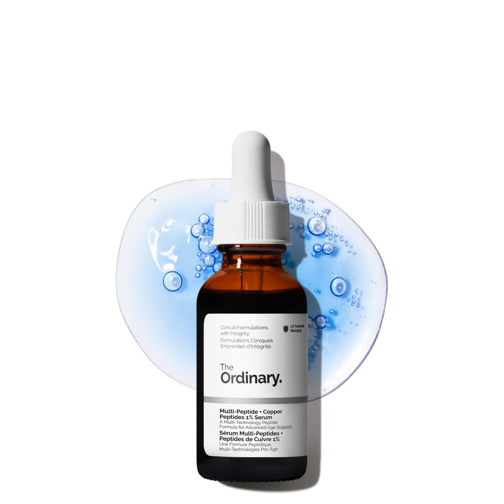

I'll be honest about how I got here. I kept seeing copper peptides come up in conversations — on Reddit, in research rabbit holes, in ingredient lists on products I was already using. And I realized I'd been nodding along without actually understanding what they do or whether the hype is warranted. So I did what I always do: I went to the research first, then started testing.
I'm currently about six weeks into testing one formula. I don't have a verdict yet — and I think that's worth saying upfront, because six weeks isn't long enough to make an honest assessment of an ingredient that works on collagen remodeling timelines. What I do have is a solid understanding of the science, a clear picture of which formulas are worth considering, and a much better sense of where copper peptides fit into a routine that's already doing a lot of work.
This article is the research phase. A follow-up with my actual experience and favorites is coming once I've had enough time to say something meaningful.
"Six weeks isn't long enough to make an honest assessment of an ingredient that works on collagen remodeling timelines."
What Copper Peptides Actually Are
Copper peptides — specifically GHK-Cu (glycyl-L-histidyl-L-lysine copper) — are a naturally occurring complex found in human plasma, saliva, and urine. They were first identified in the 1970s by Dr. Loren Pickart, who discovered that older human plasma caused liver cells to behave more like younger cells, and traced the effect back to this specific tripeptide-copper complex.
GHK-Cu is what's called a signal peptide — rather than providing structural building blocks like collagen itself, it acts as a messenger, signaling skin cells to perform specific functions. The research on what those functions are is genuinely interesting. Studies have shown GHK-Cu can stimulate collagen synthesis, improve skin elasticity, accelerate wound healing, reduce inflammation, and act as an antioxidant. It's also been studied for its ability to upregulate genes associated with tissue repair and downregulate genes associated with inflammation and cancer progression — though most of that research is still in early stages.
What makes copper peptides distinct from other peptides in skincare is the copper ion itself. The tripeptide (GHK) has a high affinity for copper, and it's the copper-peptide complex — not the peptide alone — that drives the biological activity. This is why formulation matters enormously with this ingredient, and why not all "copper peptide" products are equivalent.
What the Research Actually Shows
The clinical evidence for topical GHK-Cu is more substantial than for many trending skincare ingredients, though it's worth being clear about what's been studied and what hasn't.
Collagen and elastin production: Multiple studies have demonstrated that GHK-Cu stimulates the production of collagen types I, II, and III, as well as elastin and glycosaminoglycans — the compounds that give skin its structure and bounce. A 2015 review in the journal Biomolecules summarized over 50 years of research and concluded that GHK-Cu has significant potential for anti-aging applications based on its collagen-stimulating and antioxidant properties.
Wound healing: This is actually where the strongest clinical evidence sits. GHK-Cu has been extensively studied in wound healing contexts — both topically and systemically — and the results are consistent. It accelerates the healing of surgical wounds, burns, and skin grafts. The mechanism is well understood: it recruits repair cells, stimulates angiogenesis (new blood vessel formation), and reduces inflammation. This same mechanism is why it's theorized to help with skin aging, since aging skin shares many characteristics with impaired wound healing.
Skin thickness and firmness: A double-blind study found that a cream containing GHK-Cu significantly improved skin laxity, density, and thickness compared to placebo after 12 weeks of use. Participants also showed improvements in fine line depth. Twelve weeks — not six, which is part of why I'm not giving you a verdict yet.
What's less clear: Most studies use proprietary formulations with controlled concentrations, making it difficult to extrapolate to over-the-counter products where concentrations and formulation quality vary significantly. The research is promising but largely industry-funded, and more independent long-term studies would strengthen the case considerably.
- Strongest evidence: wound healing and skin repair — consistent across multiple independent studies
- Good evidence: collagen and elastin stimulation — well-supported mechanistically and in several clinical trials
- Emerging evidence: skin firmness, laxity, and fine line improvement — promising but needs more independent research
- Less clear: long-term anti-aging effects in healthy skin — most studies are 12 weeks or under
Copper Peptides vs. Other Actives
One of the things I wanted to understand before adding copper peptides to my routine was where they fit relative to what I'm already using — retinol, vitamin C, and other peptides. The answer is more nuanced than most ingredient guides suggest.
Copper peptides and retinol both stimulate collagen production, but through different mechanisms. Retinol works by binding to retinoid receptors and directly upregulating collagen-producing genes while accelerating cell turnover. GHK-Cu works by signaling repair pathways — a more indirect but potentially complementary route. Some researchers have suggested they work synergistically; others have noted that because retinol can be mildly irritating and GHK-Cu has anti-inflammatory properties, the combination might help buffer retinol's side effects. The practical guidance I've landed on: use them at different times of day or on different nights rather than layering directly.
Copper peptides and vitamin C are a different story. This is the compatibility issue that comes up most often, and it's worth taking seriously. Copper is a pro-oxidant in certain contexts, and ascorbic acid (vitamin C) can reduce copper ions in a way that may destabilize both ingredients. The research on whether this is a significant concern in actual topical formulations is mixed — some chemists argue the interaction is minimal at skincare concentrations, others recommend avoiding the combination. My approach: vitamin C in the morning, copper peptides in the evening. It's the cautious call and costs nothing.
With other peptides — signal peptides, carrier peptides, neurotransmitter peptides — copper peptides are generally compatible and complementary. They're working through related but distinct pathways, and there's no known interaction that would reduce efficacy of either.
Don't use copper peptides at the same time as vitamin C or strong acids. The safest approach: vitamin C in the morning, copper peptides in the evening. On retinol nights, apply them at different steps or alternate evenings entirely.
The Formulas I'm Looking At
Copper peptide products vary enormously in quality, concentration, and formulation approach. Here's my honest assessment of the ones I've been researching — ranging from accessible to investment-level.
The Ordinary Buffet + Copper Peptides 1%
The most accessible entry point into copper peptides. At 1% GHK-Cu alongside a broad spectrum of other peptides and amino acids, it's a reasonable starting concentration for someone who wants to experiment without committing to a higher-end formula. The texture is slightly tacky and it layers best under a moisturizer rather than a serum. The main limitation is that 1% is on the lower end of what studies have used — meaningful, but probably not optimized for maximum collagen stimulation. For the price point, it's a sensible starting place.

1% GHK-Cu with a broad peptide and amino acid complex. A sensible, low-commitment entry point if you're new to copper peptides. Slightly tacky texture — layer under moisturizer for best results.
Shop on Amazon ↗Biossance Squalane + Copper Peptide Rapid Plumping Serum
A more elegant formulation that pairs GHK-Cu with squalane and a plumping peptide complex. The squalane base makes it significantly more comfortable to use than The Ordinary's formula — it absorbs without tackiness and layers well under other products. Biossance's clean formulation philosophy means no fragrance, no unnecessary additives. The trade-off is that the copper peptide concentration isn't disclosed, which makes it harder to assess potency. What I can say is that it's the kind of formula I'd actually use consistently — and consistency is ultimately what drives results with any collagen-stimulating ingredient.

GHK-Cu in a squalane base with a plumping peptide complex. Elegant texture, no tackiness, no fragrance. Concentration not disclosed but formulation quality is high. The kind of formula you'll actually use every day.
Shop on Amazon ↗Allies of Skin Multi Peptides & GF Serum
The most comprehensive formula in this roundup — a dense, multi-active serum that combines copper peptides with growth factors, multiple other peptide types, and a range of supporting actives. It's doing a lot of things at once, which makes it harder to isolate what's driving results, but for someone who wants a one-serum approach to anti-aging actives, it's well-formulated and well-regarded. The price reflects the complexity of the formula. This is the kind of product that rewards patience — the ingredient stack is designed for cumulative, long-term results rather than immediate visible change.

Copper peptides alongside growth factors, multiple peptide classes, and supporting actives in one dense serum. A strong option if you want a single high-performance serum rather than layering multiple products. Designed for long-term cumulative results.
Shop on Amazon ↗Medik8 Liquid Peptides
Medik8's approach to peptides is characteristically rigorous — they've formulated a 30% peptide complex that includes copper peptides alongside signal, carrier, and neurotransmitter peptides in a lightweight, water-like texture. The concentration is high and the formulation is clean. Medik8 is a brand I trust for formulation integrity, so the fact that this is their flagship peptide serum carries some weight. It layers beautifully under their retinal products, which makes it easy to integrate into an existing Medik8 routine.

A 30% multi-peptide complex including copper peptides in a lightweight water-like texture. Rigorous Medik8 formulation, layers beautifully with their Crystal Retinal. A strong option for those already in the Medik8 ecosystem.
Shop on Medik8 ↗How I'm Thinking About the Routine
Based on the research, here's how I'd integrate copper peptides into an existing anti-aging routine — with the caveat that I'm still working through this myself:
- Morning: Vitamin C serum → moisturizer → SPF. No copper peptides in the AM if you're using vitamin C.
- Evening (retinol nights): Copper peptides first, allow to absorb, then retinol. Or alternate — copper peptides some nights, retinol others. Don't layer directly if your skin is sensitive.
- Evening (non-retinol nights): Copper peptides are the star — apply after cleansing, layer moisturizer over top.
- Frequency: Daily use is fine and likely optimal, given that collagen remodeling is a cumulative process.
- Timeline: Don't assess results before 12 weeks of consistent use. This is not an immediate-results ingredient.
Where I Am Right Now
Six weeks in, I don't have a verdict. My skin hasn't dramatically transformed, but I also didn't expect it to — the research is clear that meaningful collagen remodeling takes three months minimum. What I can say is that the formula I'm currently testing hasn't caused any irritation, plays well with the rest of my routine, and fits into my evenings without adding complexity.
What I'm watching for at the 12-week mark: changes in skin firmness particularly around the jawline and cheeks, texture improvements, and any change in the fine lines that have been there since my CO2 recovery. I'll report back with honest observations — including if I notice nothing at all, because that's useful information too.
In the meantime, if you're curious about copper peptides, the research genuinely supports giving them a try. The entry point with The Ordinary is low enough that it's not a significant financial commitment. The Biossance formula is worth it if you want something more pleasant to use daily. And if you're already in a Medik8 routine, their Liquid Peptides is the natural fit.
Follow-up coming once I've actually earned an opinion.